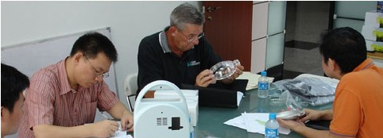

|
Otomotiv, Beyaz & Kahverengi Eþya ve Ambalaj Endüstrisinde lokomotif özellikteki yatýrýmcý ve üreticilerin konuya yurt içinde yeterince ilgi göstererek kalkýnmasýný saðlamak yerine yurtdýþý üreticilerini tercih etmeleri, istihdam ve ekonomik hareketliliðe ivme kazandýrabilecek, ülke ekonomisinin geliþmesinde önemli bir yer tutmasý gereken Kalýp Üretim alanýndaki firmalarý bugün olduklarýndan daha zor günlere doðru sürüklemektedir.

Kaynak: www.meritsc.com
Son yýllarda tüm yerli kalýp üreticisi firmalarýn karþýsýna rakip olarak çýkan, uzakdoðulu kalýp firmalarý ile öncelikli olarak fiyat ve üretim süreleri konularýnda kýyaslanmak üretici firmalarýn sektör deðiþtirme ya da piyasadan çekilme gibi olumsuz, bahsi geçen konularda iyileþtirme çalýþmalarýna baþlanmasý gibi de olumlu sonuçlara sebep olmaktadýr.
Kaynak: www.meritsc.com
Öncelikle þunu belirtmek isterim; Benim tanýma / tanýþma þansý bulduðum hemen, hemen tüm uzakdoðulu firmalar, "kýsa sürede kaliteli üretimin gerekliliði" bilincinde olmalarýna raðmen, aþaðýdaki sebepler dolayýsý ile bunu görmezden gelmek zorunda kalan firmalar da az deðil,
- Kalýp tasarýmýna baþlamadan yapýlmasý gerekli, prototip, parça ve kalýp doldurma analizi gibi konulara ('ki bu konularýn süre ve maliyet kýsýmlarýna müþterinin de katýlmasý gerekiyor) yeterince zaman ayrýlmamasý nedeni ile denemeler sonrasý yaþanan geri dönüþlerin sýklýðý, nedenlerinden kaynaklanan, kalýp teslim sürelerinde uzama,
- Yaþanan geri dönüþlerin iþletme maliyetlerinin yeterince karþýlanmamasý,
Ýnanýn bu konularýn yaþanma sýklýðý uzakdoðulu kalýp imalatçýlarýnda da az deðil. Ama her nedense 1. sýrada fiyat faktörünün tutulmasý yatýrýmcýlarýn kalýp üreticilerine karþý pazarlýk konusu yapmalarýna neden oluyor.
Kaynak: Sezgin Uzcan
Henüz birkaç ay önce bir müþterimin talebi üzerine; yaklaþýk 10 kalýptan oluþan bir proje için Çin ve Kore'li kalýpçýlardan aldýðým teklif tutarlarýný bilgilerinize sunmak istiyorum;
Ülke: Çin
Teklif alýnan firma: 8
Firma Kalite deðerleri: 2/5 - 4/5
Fiyat Aralýðý: 25.000 - 150.000 €
Ülke: G. Kore
Teklif alýnan firma: 4
Firma Kalite deðerleri: 4/5
Fiyat Aralýðý: 110.000 - 130.000 €
Þimdi bu konuda kaba fikir beyan edersek; Kore'li firmalarýn daha tutarlý olduklarýný söyleyebiliriz. Ancak Çin'deki kalýp üreticilerinin çokluðunu, iþçiliðin Kore ye nazaran çok daha ucuz olduðunu, her yüksek fiyatýn kaliteyi de beraberinde getirmeyebileceðini göz önünde bulundurduðumuzda referanslarý tutarlý olanlarý da incelemek gerekir diyebiliriz.
Kalýp imalat projelerinde önceliði uzakdoðulu kalýp firmalarýnýn alma nedenlerini incelersek;
-
Konseptten pazara çýkýþ sürecinde; Giderek kýsaltýlmaya çalýþýlan süreçler içinde baþrolü oynayan kalýp imalat sürecinin 2-6 hafta seviyelerine kadar çekilmiþ olmasý;
- Üretim ve istihdam yaratan firmalara güçlü devlet desteði,
- Özellikle Çin de 200-300 kiþinin çalýþtýðý kalýphaneler,
- Atýl durumda bekleyen CNC ve NC tezgâhlarýn çokluðu
- Tezgâh ve Ekipman yatýrýmýnýn dar olduðu firmalarda yan sanayi kullaným alýþkanlýðý
- Standart parça kullaným alýþkanlýklarý,
- Proje yatýrým maliyetinin olabildiðince düþük tutulmaya çalýþýlmasý;
- Ucuz mühendislik ve iþçilik maliyetleri,
- Ucuz donaným maliyetleri,
- Çinli imalatçý ve ithalatçý firmalarýn düþük kar payý ile çalýþmalarý nedeni ile ucuz standart parça ve çelik malzeme maliyetleri.
- Yurtiçi kalýpçýlar arasýnda yetersiz araþtýrma sonucunda teklif almak için mevcut projeye uygun olmayan kalýp imalatçýlarýnýn seçimi;
- Kalýp üretici firmalarýnýn çokluðuna raðmen sektör bazýnda hýzlý uzmanlaþma,
- Çalýþýlan sektör ihtiyaçlarýna göre doðru ekip ve donaným yatýrýmý,
- Projenin gerektirdiði kalite çýtasýnýn gereðinden yukarýda tutulmasý;
- Saðlýklý bir sipariþ için gerekli tüm verilerin kalýp üreticisi firmaya aktarýlmasý;
- Parça teknik resmi ve/veya CAD datasý, prototip v.s.
- Kullanýlacaðý sektör,
- Kullanýlacak plastik hammadde verileri,
- Kalýptan beklenen baský adedi ve çevrim süresi aralýklarý,
- Birlikte çalýþacaðý plastik/metal parça ya da komponentler,
- Kalýp tasarým ve imalatýnda uygulanacak müþteri taleplerini içeren form.
- Çalýþýlan sektör ihtiyaçlarýna göre doðru ekip ve donaným yatýrýmý,
Yukarýda bahsettiðim dört ana baþlýðý ayný zamanda sipariþe karar vermek için belirleyici faktörler olarak da adlandýrabiliriz.
Þimdi de uzakdoðuda kalýp yaptýrmanýn olumsuz yönlerine bir göz atalým;
- Ýletiþim problemi; birçok uzakdoðulu firmada dil sorunu ön planda daha da
ileri gedersek sadece dil bildikleri için konu ile ilgisi olmayan kiþiler
yönetici olarak karþýmýza çýkabiliyor. Bu durum teknik aðýrlýklý yabancý dil
konusu eksikliðini de içeriyor.
- Lojistik uzaklýk; Hava- kargo ile çözülebiliyorsa da bazen ilgili malýn fatura maliyetine yaklaþan yada geçen yüksek harcamalar söz konusu olabiliyor. Deniz taþýmacýlýðýnýn oldukça hesaplý olmasýnýn yanýnda 5-8 hafta gibi sürelerin göze alýnmasý gerekiyor.
- Lojistik uzaklýk konusunun diðer bir faktörü de takip ve iþe katýlým zorluðu gibi nedenler imalat takibi, deneme baskýlarý ve final baskýlar için sýk seyahat zorunluluðu getirdiðinden kaybedilen zaman ve ulaþým masraflarýna ait giderleri için öngörülen parasal deðerlerin iyi hesap edilmesi gerekiyor.
- Kalite; Kalite bilincinde olan firmalar az deðil ancak kalýp ömürlerinin kýsa olabileceði riskini göze almak gerekiyor. Sonun da projeyi bir þekilde kabul etmek ve ithalatýný kabul etmek zorunda kalýnabilir. Bunun için ithalat sonrasý devreye alma ekibinin yeterli tecrübeye sahip olmasý gerekir.
|